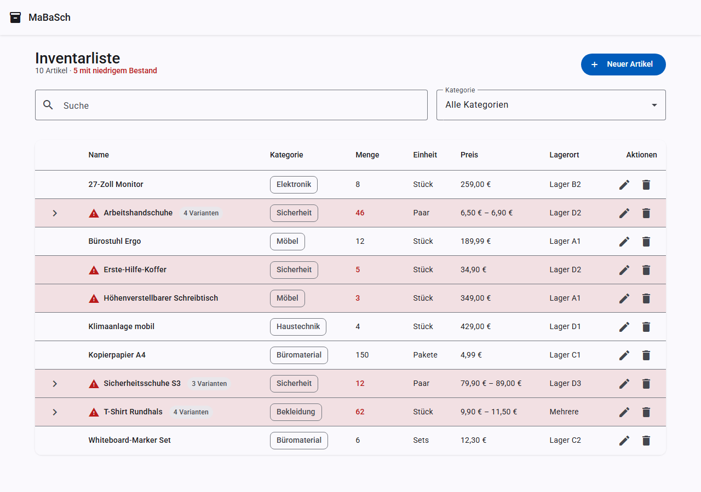
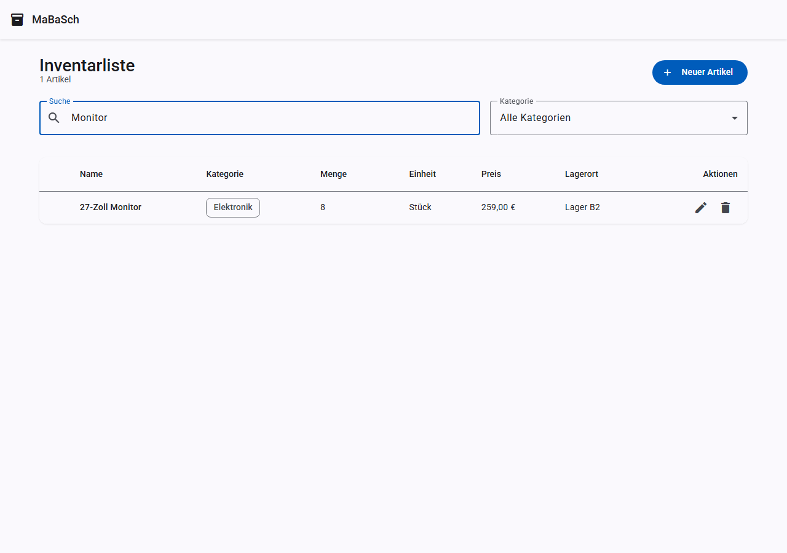
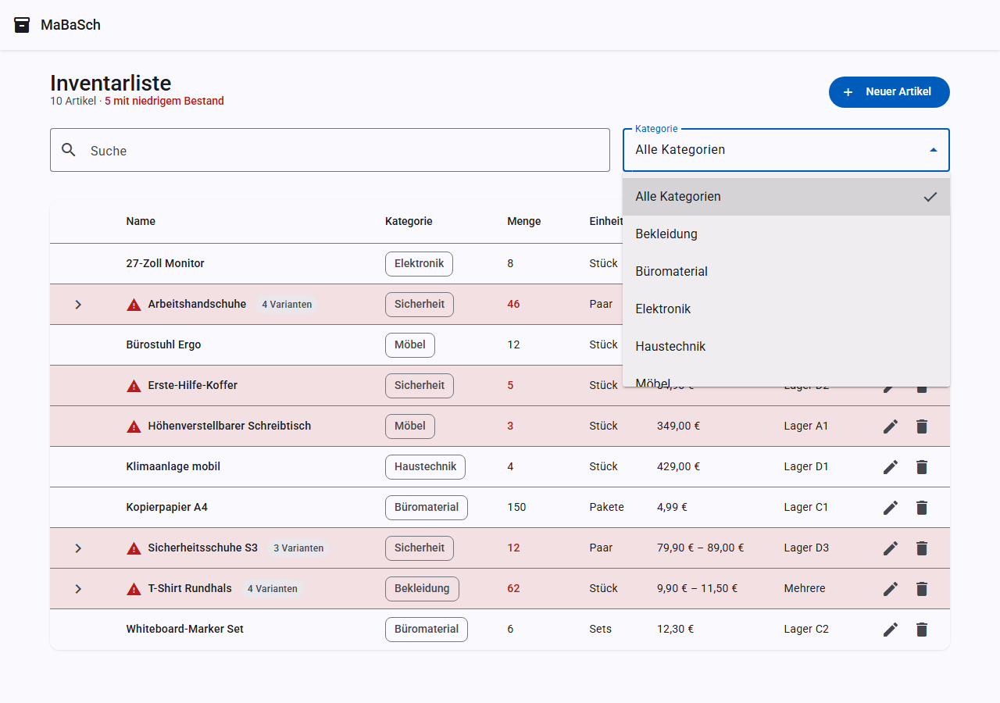
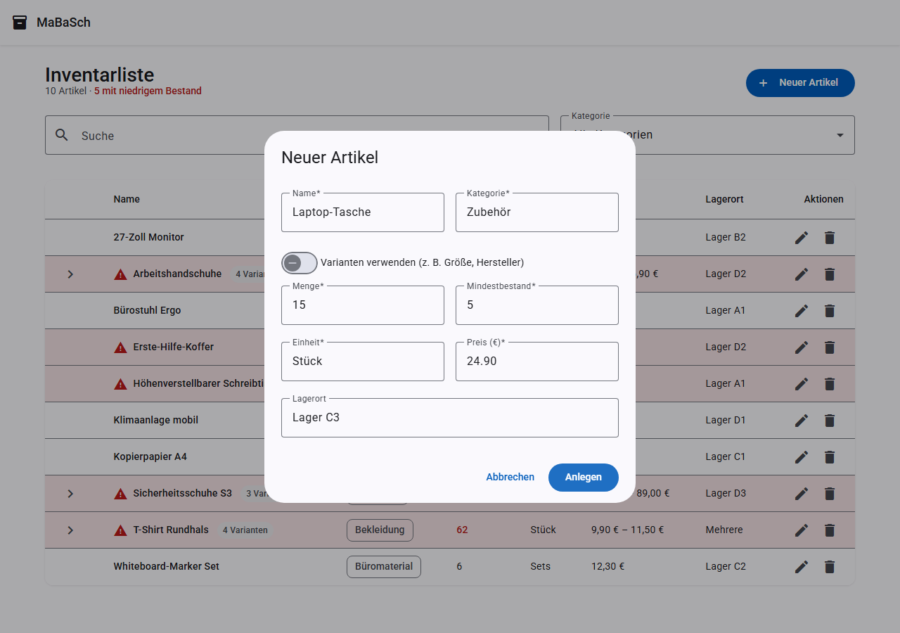
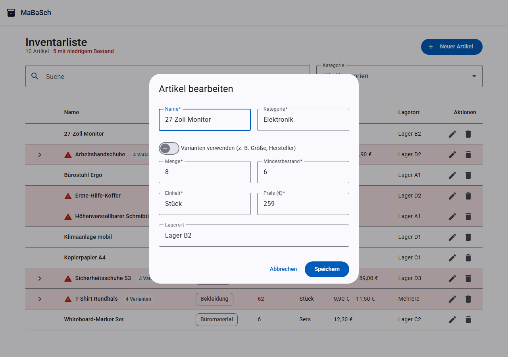
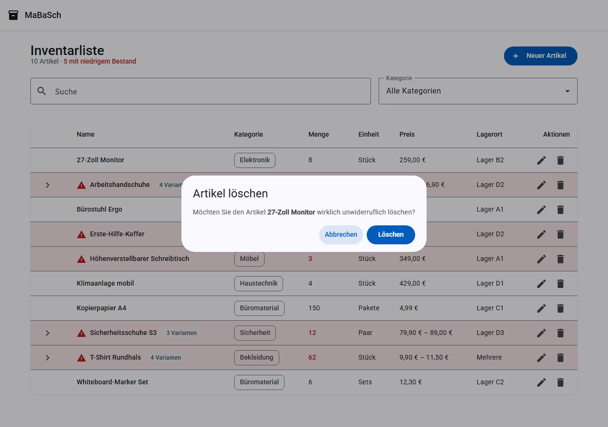
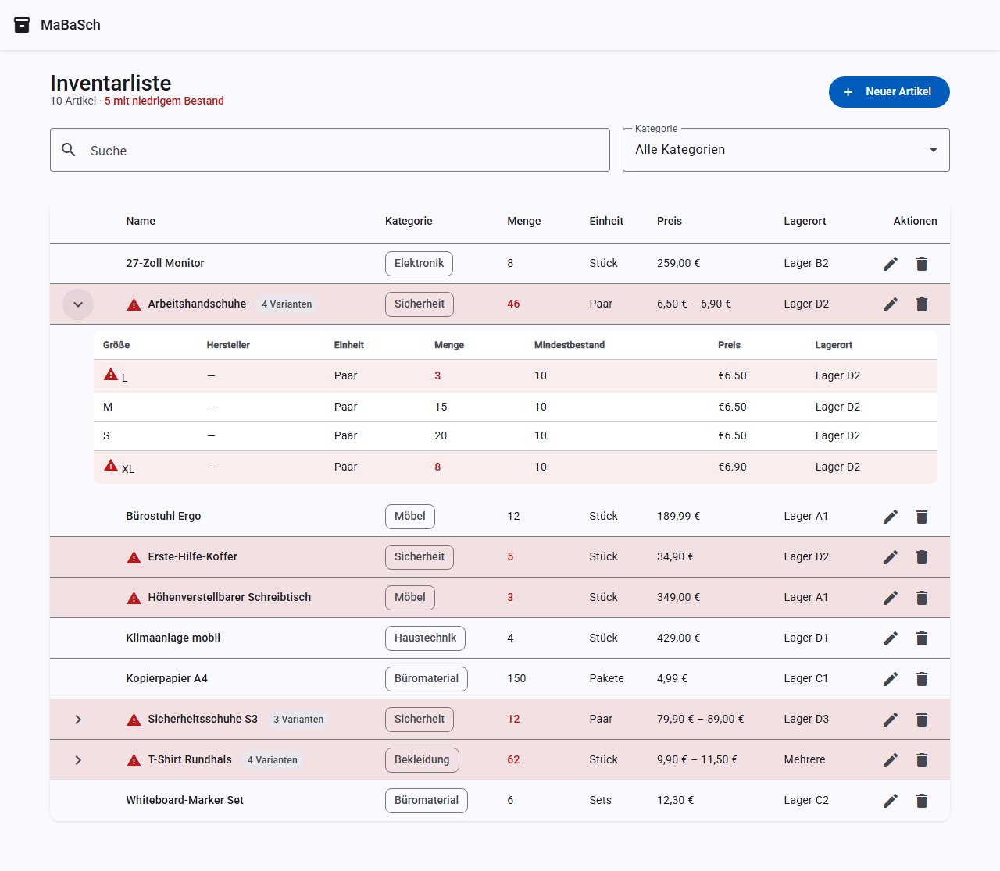
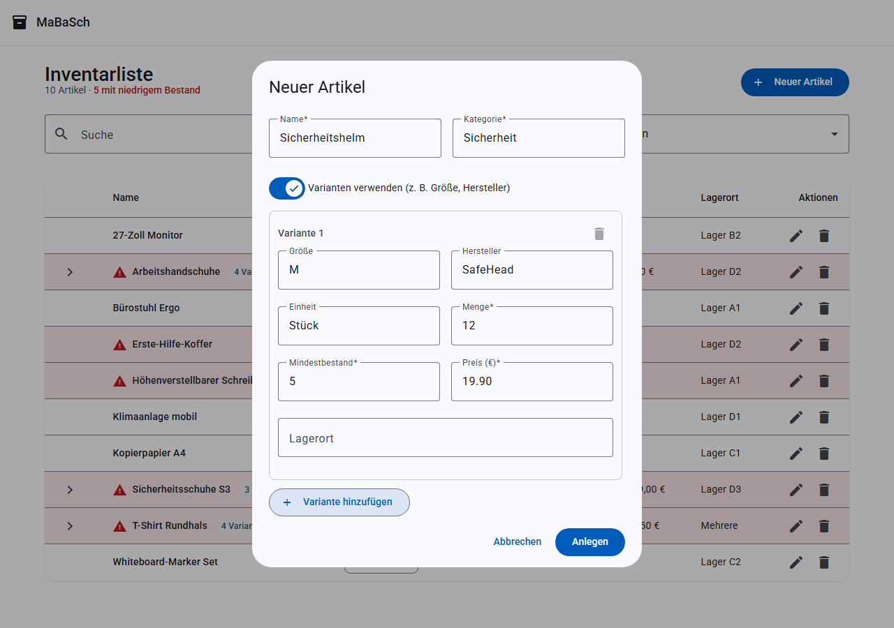
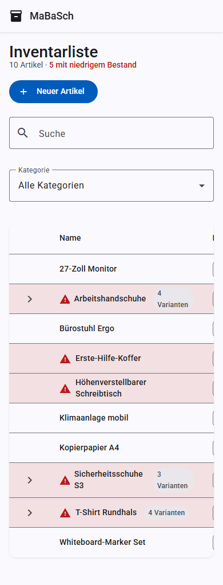

Funktionen¶
Inventarliste¶
Die Startseite zeigt alle Artikel in einer sortierbaren Tabelle mit Name, Kategorie, Menge, Einheit, Preis und Lagerort. Artikel, deren Menge den Mindestbestand unterschreitet, werden rot hervorgehoben und mit einem Warnsymbol markiert.

Suche¶
Über das Suchfeld lässt sich nach Name, Kategorie oder Lagerort filtern — bei Artikeln mit Varianten auch nach Größe, Hersteller oder Lagerort der einzelnen Variante. Die Suche reagiert mit einer kurzen Verzögerung (Debounce), sodass nicht bei jedem Tastendruck ein Request ausgelöst wird.

Kategorie-Filter¶
Zusätzlich zur Suche kann die Liste auf eine bestimmte Kategorie eingeschränkt werden.

Sortierung¶
Ein Klick auf die Spaltenköpfe Name, Kategorie, Menge oder Preis sortiert die Liste auf- bzw. absteigend nach dieser Spalte.
Artikel anlegen¶
Über den Button Neuer Artikel öffnet sich ein Dialog mit allen Pflichtfeldern (Name, Kategorie, Menge, Mindestbestand, Einheit, Preis) sowie dem optionalen Lagerort.

Artikel bearbeiten¶
Über das Stift-Symbol in der jeweiligen Zeile lässt sich ein bestehender Artikel bearbeiten. Der Dialog ist mit den aktuellen Werten vorausgefüllt.

Artikel löschen¶
Das Papierkorb-Symbol öffnet einen Bestätigungsdialog, bevor ein Artikel endgültig gelöscht wird.

Artikel-Varianten (Größe, Hersteller)¶
Artikel, die es in mehreren Größen oder von mehreren Herstellern gibt (z. B. Arbeitshandschuhe in S/M/L/XL oder ein T-Shirt von zwei Herstellern), lassen sich als ein Artikel mit mehreren Varianten anlegen. Jede Variante hat eine eigene Menge, einen eigenen Mindestbestand, Preis, Lagerort und optional eine eigene Einheit.
In der Liste erscheint ein Varianten-Artikel als eine Zeile mit aggregierten Werten (Gesamtmenge, Preisspanne). Ein Klick auf den Pfeil links klappt die Detailaufteilung nach Größe/Hersteller auf.

Beim Anlegen oder Bearbeiten eines Artikels aktiviert der Schalter „Varianten verwenden" den Varianten-Modus: Statt der direkten Bestandsfelder erscheint eine Liste von Varianten-Zeilen (Größe, Hersteller und Einheit optional, Menge/Mindestbestand/Preis Pflichtfelder), die sich per „Variante hinzufügen" erweitern lässt.

Ein Artikel kann jederzeit zwischen „einfach" (direkte Felder) und „mit Varianten" umgeschaltet werden — die Bestandswarnung wird dann pro Variante geprüft und der Artikel als Ganzes gilt als „niedriger Bestand", sobald mindestens eine Variante betroffen ist.
Bestandswarnung¶
Sobald die Menge eines Artikels (bzw. einer Variante) seinen Mindestbestand erreicht oder unterschreitet, wird die Zeile rot eingefärbt und mit einem Warnsymbol versehen — sowohl in der Liste als auch beim Bearbeiten sichtbar.
Responsives Design¶
Die Anwendung ist für mobile Geräte optimiert: Auf schmalen Bildschirmen lässt sich die Tabelle horizontal scrollen, alle Dialoge und Formulare passen sich der Bildschirmbreite an.
